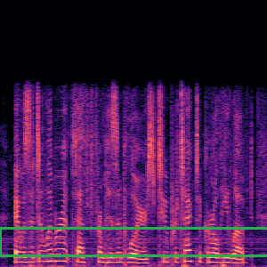

Learning to Evade: Statistical Learning-Based Adaptive Attacks Towards Audio Watermarking
Abstract:The abuse of original audios has attracted widespread attention in the society. Audio watermarking has been proposed as a way to assert user copyright of audios. However, existing audio watermarking methods are vulnerable to adversarial attacks. Our findings reveal that the message probabilities output by the watermark decoder follow a normal distribution for both clean and watermarked audio. This observation can be leveraged to detect existing audio watermark attacks. In this paper, we introduce AWM, an adaptive audio watermark attack method designed to bypass existing detection strategies. AWM employs a two-step optimization process: the first step ensures the success of the watermark attack, while the second step focuses on enhancing audio quality. The proposed attack iteratively estimates the parameters of the normal distribution using limited audio samples based on the target audio and applies adaptive optimization to adjust the decoded message probabilities toward the estimated normal range. We evaluate AWM on two watermarking methods across three diverse voice datasets and compare the results with existing audio watermark attack techniques. Our experiments demonstrate that the proposed attack achieves a high attack success rate while effectively bypassing detection, with detection success rates remaining under 10% for watermark replacement and watermark creation, and at 0% for watermark removal.
Demonstration
Compare with Audio Watermark Attack Methods
We compare our attack method with AudioMarkBench:
Watermark Replacment
| Attack: | Original (Clean) | Watermark | AudioMarkBench | Ours | Ours (+opt) |
| Audios | |||||
| Spectrogram |  |
 |  |
 |
|
| Watermark Message | 0100111110100100 | 000001110101100 | 1111111100000000 | 1111111100000000 | 1111111100000000 |